TMS320
Texas Instruments TMS320 is a blanket name for a series of DSP TMS320 from Texas Instruments.
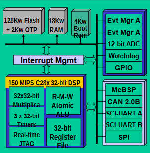
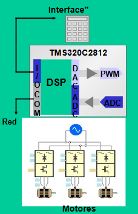
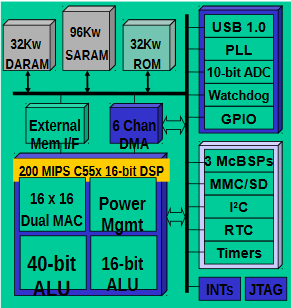
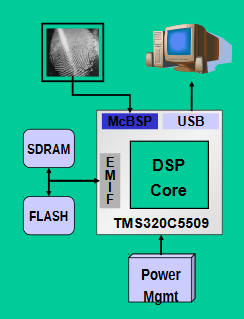
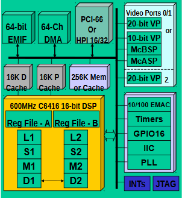
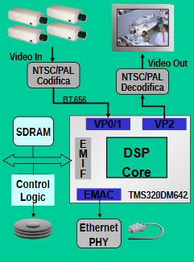
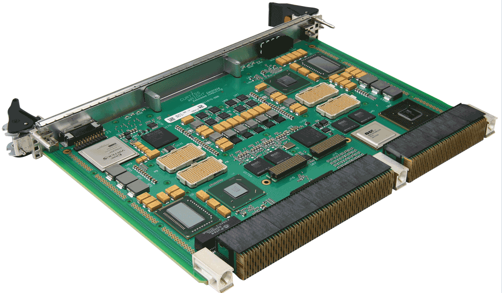
The processor is available in many different variants, some with fixed-point arithmetic and some with floating point arithmetic. The floating point DSP TMS320C3x, which exploits delayed branch logic, has as many as three delay slots.
C2000 Series
C2000 microcontroller family consists of 32-bit microcontrollers with performance integrated peripherals designed for real-time control applications.
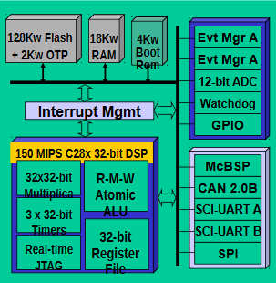
Examples of applications:
- Electrodomestics
- Cars
- Sonic and Ultrasonic
- Power
- Rotor position
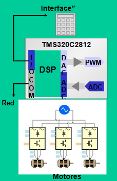
Aplication in Engine Control:
C5000 Series
Consists of 16-bit fixed-point DSP, 6 stage pipeline with in-order-execution of opcodes, parallel load/store on arithmetic operations, multiply accumulate and other DSP enhancements. Internal multi-port memory. no cache unit.
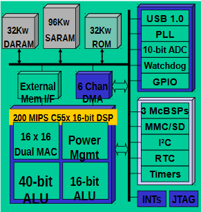
Examples of applications:
- Radios
- GPS apps
- Movile Phones
- Fingerprint Readers
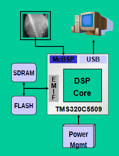
Aplication in Fingerprint Readers:
C6000 Series
Optimized for embedded systems with a focus on power savings and real-time performance, provide best-in-class performance per watt. TI DSPs are simple to program with many tools and libraries available to ease development. TI optimized libraries provide access to common math functions with everything from filtering to FFTs to linear algebra.
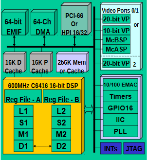
Examples of applications:
- Remote Access Servers
- Cable modems
- Virtual reality 3-D graphics
- Security Camera
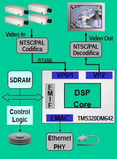
Aplication in Security Camera:
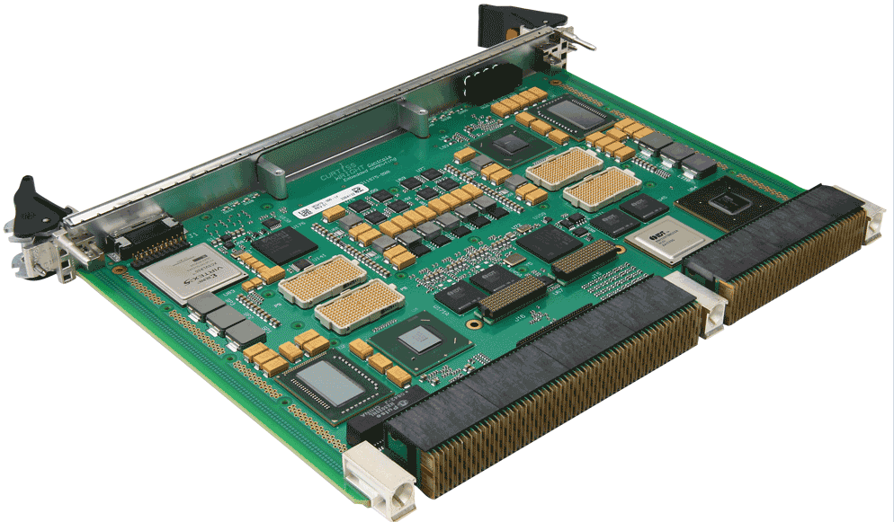
(There are more applications for each series).